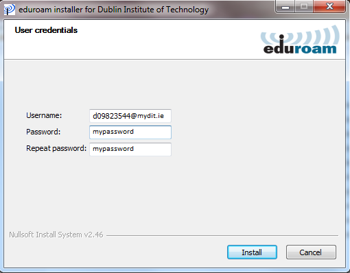

School of Computer Science IT Teaching information
Identity Management (Username & Password)
The School of Computer Science use the standard DIT Active Directory (AD) password system. Your AD user id and password are used for Computer Logins, Email, Time tables, Web courses, Library databases and Eduroam. Each Student gets a single user id and password which is used to id them across every service.
All AD user name and passwords are entered using the format <user id> and <password> e.g.
With the exception of Eduroam, which takes the user id with the following format
<user id@mydit.ie> e.g.

To connect to Eduroam, you must use a certificate. The certificate can be downloaded from the following site. https://cat.eduroam.org/. Once connected to Eduroam, you should be automatically connected (with your DIT credentials) to every college network in Europe once you are within Wi-Fi range.
Please be aware that changing your AD password, changes your password for all services i.e. Computer Logins, Email, Time tables, Web courses, Library databases and Eduroam. You can manage your password from the following site https://mypassword.dit.ie if you register your details here first. Alternatively you can ask any of the Technicians to reset or modify your password. The School of Computing Technician’s office is located at KSTA112 on the first floor of the Annex building in Kevin Street.
Your AD user id and password are not used for exam results which are managed by the Exams office, details of which will be sent to each student every semester. The Exams office is located on the second floor of the main building in Kevin Street.
For further information visit Central IS password management page.
Storage
Each Student is allocated 4Gb of personal network storage space which is available through a mapped network drive while logged onto our School of Computing Lab machines. The mapped network drive is allocated the letter Z and students are encouraged to save to this location rather than the “My Documents” folder. In the School of Computer Science Labs the “My Documents” folders are local to each individual machine and are destroyed on logout.
PC’s, Labs & Software
The School of Computing Labs consist of 8 Room’s in both the Kevin Street Annex and Aungier Street buildings
Kevin Street Annex (KSTA):
KSTA115, KSTA116, KSTA117
KSTA305, KSTA306, KSTA308
Aungier Street (AU):
AU1005, AU1006
KSTA115 is a MAC Lab using macOS 10.11 (El Capitan) with 23 machines. All other Labs consist of identically configured PC’s with 22 – 30 PC’s per Lab. All PC Labs are configured with an identical base image, with additional software added depending on semester and lab requirements. The lab image content changes from semester to semester depending on the requirements of the course.
Remote Access
For Students in the School of Computer Science, access to the college network from the outside world is done through the Virtual Desktop Infrastructure (VDI) or in special circumstances via Remote Desktop using a gateway server. The VDI works similar to a Remote Desktop Connection; in that it provides the Student with a desktop that runs on the college network with full access to their network storage and all other network resources. Detailed instructions on connecting to the VDI using various platforms and browsers can be found in the following pdf (vdi.pdf).
While all Students in the School of Computer Science have access to the VDI environment, only certain Students have access through the gateway server. If you are supposed to have access through the gateway server, you will be informed by your Lecturer. Detailed instructions for setting up the gateway connection can be found in the following pdf (rdp.pdf).
Application Servers
Due to resource limitations, not all software can be installed on the lab images. To get around this limitation we provide Remote Desktop access to 2 Application Servers, socAppSrv1 & socAppSrv2. If you need to access these servers you will be informed by your Lecturer. To connect to the servers, simply start a Remote Desktop Connection to either socAppSrv1 or socAppSrv2 and connect using your Active Directory user id and password. You can connect to these servers using your own personal devices once you are connected to the DIT network by using their IP Addresses.
socAppSrv1 (147.252.30.4), socAppSrv2 (147.252.30.5)
Contact Information
School of Computer Science Technicians: soc-tech@dit.ie